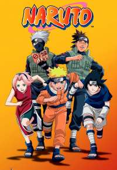

Naruto
Naruto Uzumaki is a hyperactive, hard-headed, stubborn ninja who lives in the Hidden Leaf Village. Minutes before his birth, the Nine-Tailed Fox, a huge fire demon, attacked the Hidden Leaf Village. The 4th Hokage, the leader of the village, sacrificed himself to seal the Nine-Tailed Fox inside the newborn Naruto. Years later, Naruto is shunned by the village because of the demon inside of him. As he tries to find his place in the village, he meets many friends and enemies.
Shippuden
An older and slightly more mature Naruto desperately tries to save his friend, Sasuke Uchiha, from the manipulation of Orochimaru. After training for 2 and a half years, Naruto returns to his village to start his mission. However, in that time, he has acquired some dangerous enemies including the rogue ninja of Akatsuki.